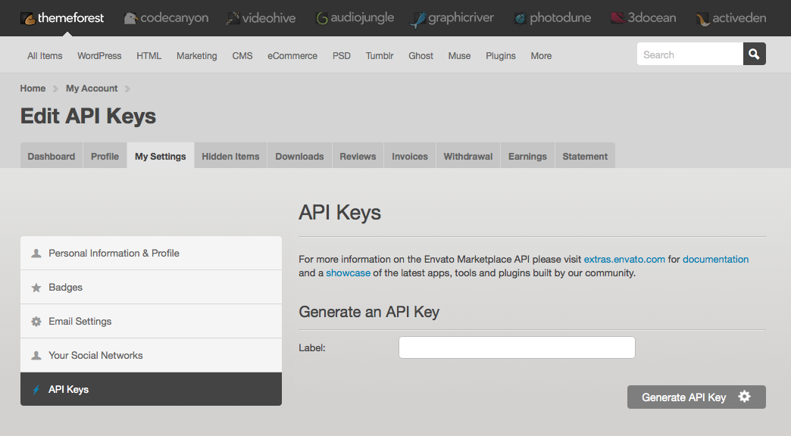

Getting Started
Before you start
This documentation is intended to help you properly install and configure the theme on your wordPress site.
If you are absolute beginner in WordPress you can go to this link and spend some time there.
Installation
WordPress theme can be installed in 2 ways.
- Through wordPress admin dashboard.
- Uploading via FTP.
Through WordPress
Installing a theme through WordPress is very easy. Login to your wordPress Dashboard and be ready to go. Now you have to follow few steps described below.
- In wordPress Admin panel's sidebar navigation go to Appearance > Themes. Now click on Add New button ar the top.
- In the main download zip you will find a folder named "daily-news". Make a zip of this folder.
- Now click on "Upload Theme" and after That click "Choose File" and locate your Theme zip file(daily-news.zip). Then install now.
- Within few seconds you will see a message "Theme installed successfully."
- Now click on "Activate".
Uploading via FTP
In your themeforest download folder you will find a folder "daily-news" you have to upload this folder in your web host. Follow the instruction below.
You must should install and activate these "Kirki Toolkit" plugin before you customize your site or write any post or page or anything else. Without this plugin the theme will not work properly.
Home page for this theme
For this theme's custom home page at first you have to create 2 page and make some settings.
Go to Pages > Add New and create a page. Choose "Frontpage" template for this page. This will be the home page.
Create another page with "Default Template". In both pages keep the content blank.
Now go to Settings > Reading in admin sidebar and check these option "Front page display" -> "A static page (select below)". In the dropdown options, for home page choose the page you have just created with "Frontpage" template. For blog page choose that another page which you have created with "Default Template"
Save the settings.
Theme option customization / configuration
For simplicity World Times theme uses WordPress's default customization option and most of the options are self explanatory. Go to Appearance > Customize to see the available customization options.
- Site Identity
In this section you can Add Site's image logo ( do not crop your logo in WordPress). you will see your site title and tagline which you have set up at the time of WordPress installation. If you want to change these you can do that. Also you can add site icon here.
-
Colors
If you want to change the header text color or background color of body area, you can do that in this section.
-
Homepage Layout Settings
This Settings section is used for home page layout settings. Before Using this settings options, please confirm that you have already setup the Homepage ad described in "Home page for this theme" section above in this documentation.
This setting section has 3 sub section. each section's options are described below.
-
Featured Area Options
Featured Section: This is a toggle button. It enables or disabled ( show/hide) the featured posts sections at the top of the home page.
Post Type: Here you can choose whether you want to show featured posts or latest posts in this section.
Post Count: Choose how many posts you want to show in this section.
-
Latest Post Section
Latest Secton: It enables or disabled ( show/hide) the latest posts sections as the first section below the featured section (before all category sections).
Latest Section Layout: Choose a layout option for this section from 3 available sections. 2/3 of the width, 1/3 of the width or 100% width.
Latest Section title: Title for this section.
Number Of Posts: Choose how many posts you want to show in this section.
-
Category Area Options
Category area: Under this options you will find group of options. Each group defines a category sections and containd related to that options. These options group is repeatable. Which means you can add as many sections as you want. Below is the description of the options in a group.
Category Section Layout:Choose a layout option for this section from 3 available sections. 2/3 of the width, 1/3 of the width or 100% width.
category Section title: Title for this section.
Post category: Choose the category, of which posts you want to show in this sections. If at the begenning there is only few category, don't worry. Wnen you create a categor at the time of your actual post editing or from "Posts > Categories page in your dashboard. Those category will be available in this dropdown option.
Number Of Posts: Choose how many posts you want to show in this section.
-
Featured Area Options
-
Single Post Settings
- Share Links: Show/hide share links below the single post view.
- Previous Next Post Section: Show/hide Previous next posts below single post view.
- Related Post Section: Show/hide Realted posts section based on the current post's category.
- Number of Related Posts: How many related posts you want to show.
-
Menus
This section is also comes with WordPress by default. In this section you can choose which menu (created in dashboard) will be shown in main menu area.
It is recommended that to setup menu, you don't need use this section. you can do this from Appearance > Menus. It is the more easy way. Later in this documentation I will write, how to use Menus
-
Widgets
This section also generated by WordPress by default. It's a way to quick add / remove / modification of widgets in your site widgetize area. It is the same as Appearance > Widgets option in admin panel left sidebar.
-
Static Front Page
Normally You don't need to change anything here. It is same as Home page settings.
-
Footer Settings
Under this option set you will find all the footer related setting options.
Footer Widget Area: Show Or hide the footer widget area.
Custom Copyright Text: If you enable this a new text box will be visible. In that box you can add Custom text for copyright area.
- All other options are default WordPress options which are self explanatory.
WordPress Beginner Instruction
How to Create menu
To setup navigation for your WordPress at first you have to create a menu. To easily create It is recommended that you create your pages at first. No problem if you keep this page blank at this point.
Go to Appearance > Menus now give a name to your menu and add menu item (pages or custom links) to this menu and then save the menu.
Now click on Manage Locations. Here you will see a table with two column "Theme Location" and "Assigned Menu". Choose your recently created menu from the dropdown option for the menu location (In this theme there are two menu location, "Main Menu" and "Footer Menu". Footer Menu location is beside copyright text in footer.). Now click on save changes.
How to add widgets in widgetize area
Go to Appearance > Widgets from the admin sidebar menu.
In this theme There is 3 widgetize area which are "Footer widget Area Left", "Footer widget Area center" and "Footer widget Area right".
Just drag available widgets from left side of this page into that widget area. and then insert necessary content and settings and save that widget.
Featured Post
When you edit a post you will see aan option at the end of the post editor sidebar. There you will see a dropdown option to feature the post. Choose yes to feature the post.
Demo Installation
If you want to install the demo data as the Live demo site of this theme. follow the instruction below
After installing the theme there will be a notice at the top of the dashboard which will tell you to install and activate some required and recommended plugins. One of those recommended plugin is One Click Demo Import. If you want to import the demo data then you have to install this plugin.
After installing and activating this plugin, go to Appearance > Import Demo Data.
Then click on import demo data button.
Theme Update
This section is not necessary immediately. It is for future theme update.Automatic update
For automatic Theme update notification directly in your WordPress admin area you can install this plugin from github. Envato-Wordpress-Toolkit
In github page you will see a "download zip" button. Click on it and a .zip will be download. Now install this like any other plugin and activate it.
A new menu option "Envato Toolkit" will be added in your admin dashboard sidebar. Go to that link and configure the settings there correctly.
To generate Your API Key Login to themeforest and go to your settings page. There you will see a "Api key" link among other links at left side. click there and generate an api key there. You may check the image below.

Manual Update
Download the most current version from ThemeForest in the "Downloads" area of your account.
Login to your WordPress admin area and activate another theme. May be WordPress Default Theme
Delete the Daily News theme which you are using. Keep a backup for safety.
Now Go to Install Theme > Upload and upload the latest version of the theme. After successful installation activate the theme.
Changelog
V 1.1.0 - August 3, 2019
- Fixed mobile menu css for logged in and logged out state
V 1.0.0 - April 19, 2019
- Initial release